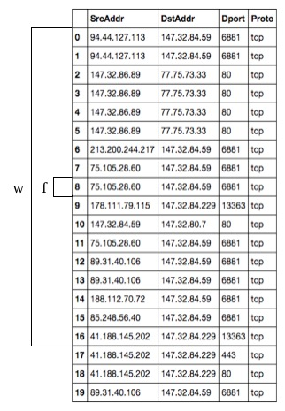

Please note that as of 09/2022 I am in the process of converting this post into a reproducible notebook. Please check back soon!
Code
import pandas as pdimport numpy as np#import pyhashimport gensimimport multiprocessing as mpfrom joblib import Parallel, delayedimport concurrent.futuresfrom pprint import pprintimport randomimport mpld3import reimport matplotlib.pyplot as pltfrom sklearn import clusterfrom sklearn import manifoldfrom sklearn.decomposition import PCA, TruncatedSVD%matplotlib inline# Enable mpld3 for notebookmpld3.enable_notebook()# Instantiate hasher object#hasher = pyhash.city_64()# Method to strip white testdef strip(text):return text.strip()# Method to set dataframe entries to integersdef make_int(text):returnint(text.strip('')) # Method to match IP against flow srcIPdef sort_ip_flow(ip):# List to house flows when matches flows_list = []# Iterate over tcp_flows listfor flow in tcp_flows: # Comparison logic - flow[1][3] corresponds to SrcIP in flow tupleif ip == flow[1][3]: # Append match to flows_list flows_list.append(flow)# Return dictionary of IPs and flowsreturn {ip: flows_list}def process_flow(flow): # Create hash of protocol proto_hash = hasher(flow[1][2]) # Create hash of SrcIP srcip_hash = hasher(flow[1][3]) # Create hash of Sport srcprt_hash = hasher(flow[1][4]) # Create hash of DstIP dstip_hash = hasher(flow[1][6]) # Create hash of Dport dstprt_hash = hasher(flow[1][7]) # Cast flow entry as list for manipulation flow_list =list(flow) # Insert hashes as entry in tuple for each flow flow_list.insert(4, (str(proto_hash), str(srcip_hash), str(srcprt_hash), str(dstip_hash), str(dstprt_hash))) # Re-cast flow entry as tuple w/ added hash tuple flow =tuple(flow_list)return(flow)def single_hash(flow): flow_hash = hasher(flow) flow_list =list(flow) flow_list.insert(4, str(flow_hash)) flow =tuple(flow_list) return(flow)
Flow2vec - exploiting co-occurence within NetFlow data
Attempting to find some co-occurence patterns in the flow data according to how an algorithm like word2vec, in its skip-gram implementation specifically for this work, works. The idea is that flows, \(V_{f}\) for vector representation, that occur within a window \(W_{f}\), which can be modeled as “time” using timestamps from the capture. A visual representation of a single flow and window of flows can be seen below :

Figure 1: Windows of netflows
When we consider the conditional probabilities \(P(w|f)\) with a given set of flow captures Captures the goal is to set the parameters \(\theta\) of \(P(w\|f;\theta)\) so as to maximize the capture probability :
Here \(D\) is the set of all flow and window pairs we extract from the text.
The word2vec algorithm seems to capture an underlying phenomenon of written language that clusters words together according to their linguistic similarity, this can be seen in something like simple synonym analysis. The goal is to exploit this underlying “similarity” phenomenon with respect to co-occurence of flows in a given flow capture.
Each “time step”, right now just being a subset of a given flow data set, is as a ‘sentence’ in the word2vec model. We should then be able to find flow “similarities” that exist within the context of flows. The idea is this “symilarity” will really just yield an occurence pattern over the flow data, much like word2vec does for written text.
Another part of the idea is much like in written text there are word / context, \((w,c)\), patterns that are discovered and exploited when running the algorithm over a given set of written language. There are common occurences and patterns that can be yielded from flow data, much like the occurences and patterns that are yielded from written text.
At the end of the embedding exercise we can use k-means to attempt to cluster flows, according to the embedding vectors that are produced through the word2vec algorithm. This should yield some sort of clustering of commonly occuring flows that have the same occurence measure in a given set of netflow captures. We can then use this data to measure against other, unseen, flows for future classification of “anamoly”. I use that word loosely as this is strictly expirimental.
Assumptions :
Maximizing the objective will result in good embeddings \(v_{f} \forall w \in V\)
Note
It is important to note with the above statment, with respect to time, is the assumption that the data I am operating from has already been ordered according to the tooling I used to acquire it.
Skip-gram Negative Sampling
One of the other portions of the word2vec algorithm that I will be testing in this experiment will be negative sampling.
The objective of Skipgram with Negative Sampling is to maximize the the probability that \((f,w)\) came from the data \(D\). This can be modeled as a distribution such that \(P(D=1\|f,w)\) be the probability that \((f,w)\) came from the data and \(P(D=0\|f,w) = 1 - P(D=1\|f,w)\) the probability that \((f,w)\) did not.
where \(\vec{f}\) and \(\vec{w}\), each a \(d\)-dimensional vector, are the model parameters to be learned.
The negative sampling tries to maximize \(P(D=1\|f,w)\) for observed \((f,w)\) pairs while maximizing \(P(D=0\|f,w)\) for stochastically sampled “negative” examples, under the assumption that selecting a context for a given word is likely to result in an unobserved \((f,w)\) pair.
SGNS’s objective for a single \((f,w)\) output observation is then:
\[ E = \log \sigma(\vec{f} \cdot \vec{w}) + k \cdot \mathbb{E}_{w_{N} \sim P_{D}} [\log \sigma(\vec{-f} \cdot \vec{w}_N)] \]
where \(k\) is the number of “negative” samples and \(w_{N}\) is the sampled window, drawn according to the empirical unigram distribution
\[P_{D}(w) = \frac{\#w}{|D|}\]
Let’s disassemble this objective function into its respective terms and put it back together again :
The term \(\log \sigma(\vec{f} \cdot \vec{w})\), from above, is used to model the
This object is then trained in an online fashion using stochastic gradient descent updated over the observed pairs in the corpus \(D\). The goal objective then sums over the observed \((f,w)\) pairs in the corpus :
Optimizing this objective groups flows that have similar embeddings, while scattering unobserved pairs.
Note
TODO - further exploration :
Running true tuples of SRCIP, DSTIP, DSTPORT, and PROTO
Label included for now, need to figure out how to persist through pipeline without skewing results - need to figure out how to match up labeling to flow after word2vec has been run
Implement timestamp window oriented ‘sentence’ creation, current implementation created same length flow ‘sentences’ for every \(f\) flow
Code
# Method to slide window over dataframe of # flowdata and create "sentences"def create_corpora(dataframe, window, corpus_count): corpus = [] corpora = [] begin =0 end =0for i inrange(corpus_count):while end <= window: end +=1else: corpus.append(dataframe[begin:(end-1)]) begin = begin + window end = end + window corpora.append(corpus)return(corpora)
# Convert all tuples created by previous create_corpora function# to strings for use with tokenization which is then used in the# word2vec algorithm below str_corpora = []for corpus in corpora[0]: str_corpus = []for sentence in corpus.values.tolist(): str_corpus.append(str(sentence).encode('utf-8')) str_corpora.append(str_corpus)
Code
# Here we train a model without using the negative sampling # hyperparameter. We will be using this for testing of # accuracy of model vs. using the negative sampling functionflow_model = gensim.models.Word2Vec(str_corpora, workers=8, vector_size=200, window=20, min_count=1)
Code
# Here we train a model using the negative sampling which # we will then compare to the model above for the impact # that the negative sampling has on the clustering of flowsflow_model_sgns = gensim.models.Word2Vec(str_corpora, workers=23, vector_size=100, window=30, negative=10, sample=5)
Preliminary results - very rough, no real hyperparameter tunings / exploration, etc.
We can see below the results may prove to be useful with respect to certain labels present in the dataset, but not others. This may have to do with the raw occurence rates of certain flow and window #\[(f,w)\] combinations vs. others. I use labels lightly as well as this will ultimately become an exercise of semi-supervised learning as it can sometimes be impossible for humans to interpret the results of an unsupervised learning task without any type of contextual insight, as labels can provide. In the case of written language, the “insight” that is provided is the fact that we know what the meanings of words are within the language and if they’re clustering correctly, re: synonyms and antonyms, etc.
We can tune for this using subsampling above in the SGNS model. Which will we do next.
TODO:
GridSearch for hyperparameters
Here we see that there is indeed a clustering that has happened with respect to the “From-Botnet-V42-UDP-DNS”
# Test for flow similarity, preferrably a flow that has the botnet labelflow_model_1.most_similar("['147.32.84.165', '192.33.4.12', '53', 'udp', 'flow=From-Botnet-V42-UDP-DNS']", topn=100)
The word2vec algorithm can also learn embeddings for phrases as well as single words for written language. The ideas I have surrounding “phrases” would be learning the embeddings for given windows of flows, if they were to present themselves in certain capacities within the captures flow data.
The current flow data that this notebook is based around are aggregated flows for bi-directional communication between endpoints. Exploiting something like capturing the ‘phrase’ of a flow, or thought another way, the bi-directional communication patterns that are contained within flow data might prove useful for application profiling, etc. through the use of application meta-data tracked through some sort of semi-supervised learning pipeline.
Clustering
Now that we have some vector representations of occurences of flows within the captures that we have, we can run a clustering algorithm over them to see if we can humanly identify some of the groupings that have taken place. For this, we’ll use kmeans within the scikit-learn package.
Kmeans has an objective function that intends to partition \(n\) objects into \(k\) clusters in which each object, \(n\), belongs to the cluster with the nearest mean. This can be seen as :
Where \(\| x_{i}^{(j)} - c_{j}\|^2\) is a chosen distance measure between a datapoint \(x^{j}_{i}\) and the cluster center \(c{j}\), is an indicator of the distance of the \(n\) datapoints from their respective cluster \(k\) centers. In this case, \(k\) is a hyperparameter that can be used within the model to define how many cluster centroids should be trained over.
Note
TODO :
Limitation for arrays larger than 16GB due to an underlying dependency that numpy has, need to investigate - this is why I’m only running kmeans on a subset of the overall model learned above
Dimensionality reduction of some kind over the data - 300 dimensional data isn’t crazy high but might have some improved performance here as well.
# Set k (number of clusters) to be 1/5 of the "vocabulary" size# or an average of flows per cluster, this is a hyperparameter# in kmeans that we can tweak later onflow_vectors = flow_model_1.syn0[0:20000]num_clusters = flow_vectors.shape[0] /5# Initialize k-means object and use it to extract centroidskmeans_clustering = cluster.KMeans(n_clusters = num_clusters, init="k-means++", n_jobs=-1)idx = kmeans_clustering.fit_predict(flow_vectors)# Create a flow / Index dictionary, mapping "vocabulary words" to# a cluster numberflow_centroid_map =dict(zip(flow_model_1.index2word, idx))
#Find some botnet labels to use for exploration of dataimport operatorsorted_clusters =sorted(flow_centroid_map.items(), key=operator.itemgetter(1))botnets = []for i in sorted_clusters:if re.search(r"Botnet", i[0]): botnets.append(i)botnets[0:10]
# Look at members of clusters according to botnet memberships discovered abovecluster_members = []for i in sorted_clusters:if i[1] ==73: cluster_members.append(i)cluster_members[0:10]
Raw flow vectors \(V_{f}\), created by word2vec, are embedded in dimensionality equivalent to the input layer of the shallow neural network that is used within the model.
t-SNE Visualization
Use t-SNE and matplotlib to visualize the clusters created using Word2Vec.
Note
TODO :
Brief explanation of the tSNE algorithm and how it handles compressing higher dimensional data into 2 or 3 dimension for visualization